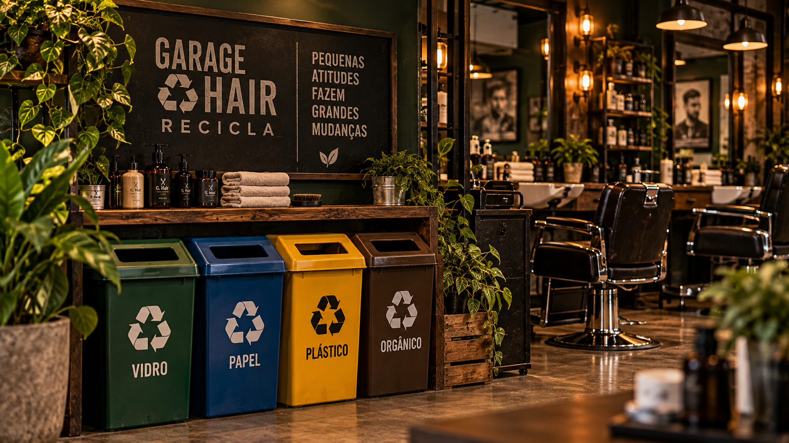
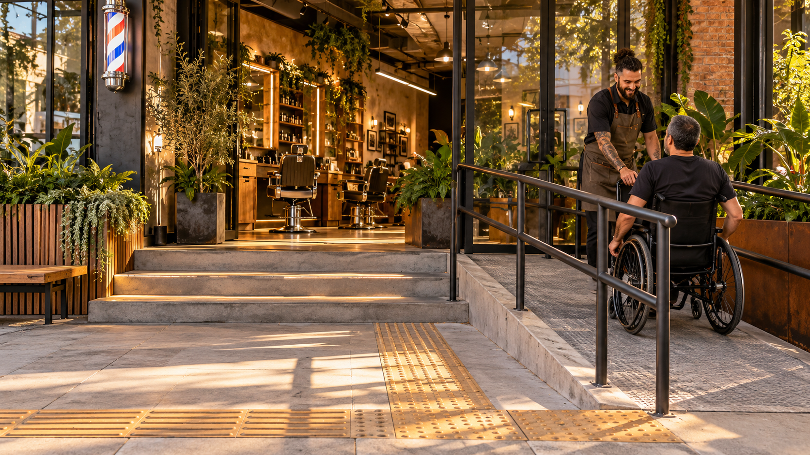
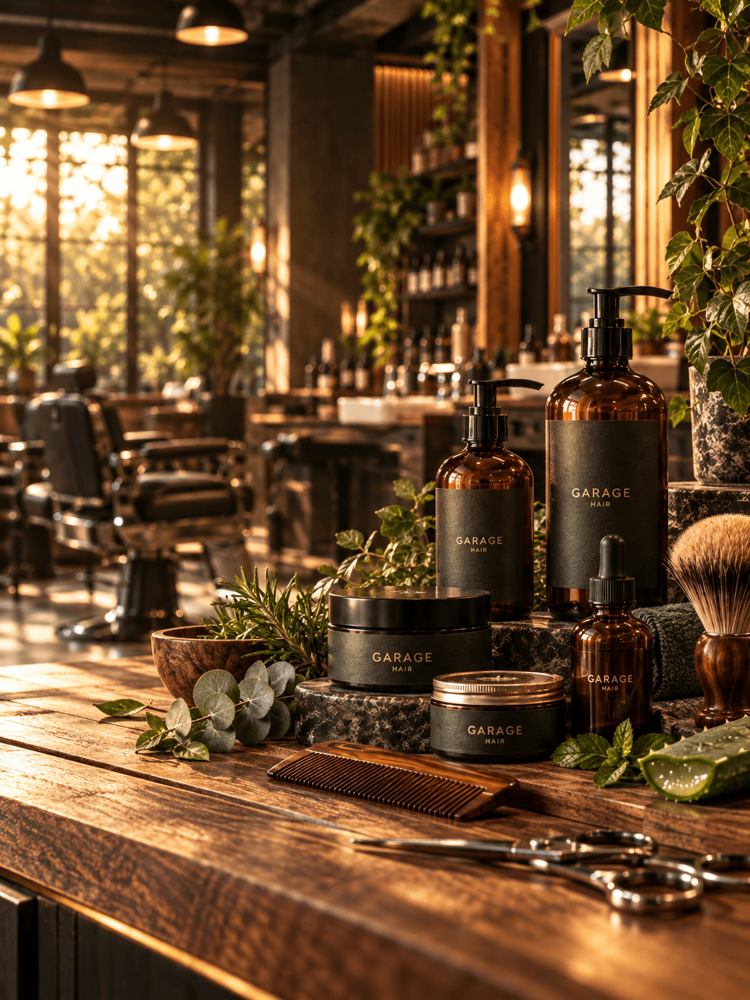
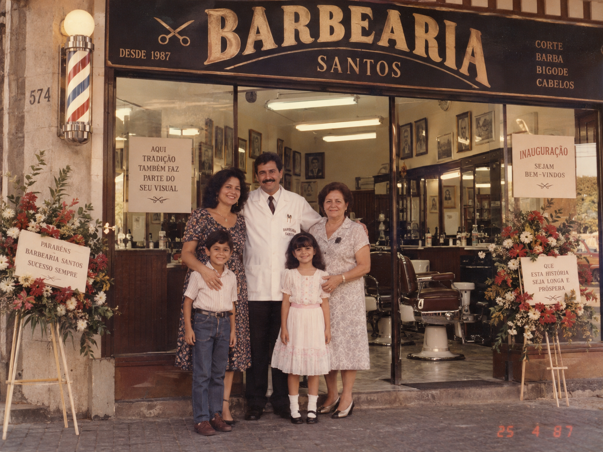
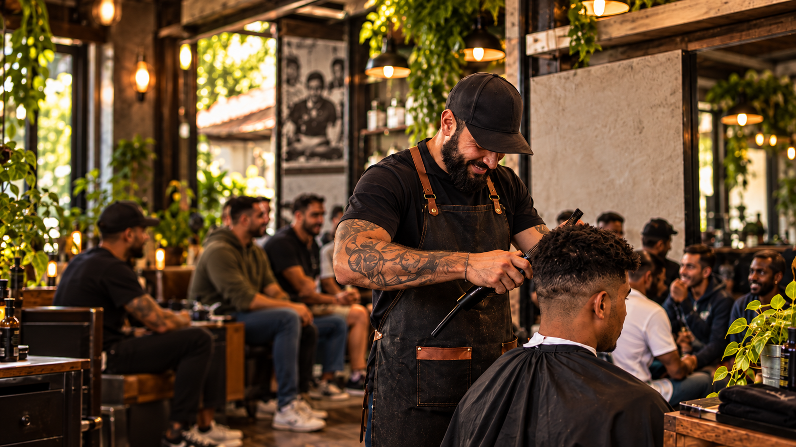

Momentos, espaços e histórias
Um olhar sobre a Garage Hair através de nossos ambientes, atendimentos, projetos, iniciativas e memórias.
Cada imagem conta um pouco da nossa história
A Garage Hair reúne tradição, cuidado, sustentabilidade, inclusão e compromisso com a comunidade em diferentes momentos da nossa trajetória.
Espaços que refletem nossa identidade

Garage Recicla

Acesso e acolhimento

Cuidado consciente

Uma trajetória iniciada em 1987

Cuidado em cada detalhe

Comunicação que aproxima

Cuidado que também transforma
Uma história construída entre gerações
Desde a inauguração da primeira barbearia, a Garage Hair preserva suas raízes familiares enquanto incorpora novas ideias, práticas sustentáveis e iniciativas de inclusão.
Conheça nossa história